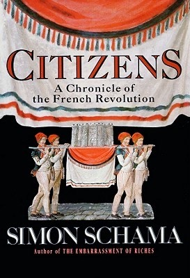

10. 寻找在地公共精神：“公民”不在于口号，而在于参与
大家好，我是杨照。
继续来为大家介绍托克维尔他所写的《论美国的民主》。
作为民众代表的“selectmen”
在观察以及分析美国的民主的时候，托克维尔特别提到了北美这样的一种非常特殊的清教徒传统。清教徒所组合成的团体，它有一种特殊的精神，那就是同质性很高。所以这是难得而且重要的基础条件，使得美国人不会落入个人伸张托克维所说的那种“自然自由”所产生的各式各样的混乱。当美国人口中说出“自由”的时候，他们脑袋里相应想的，从来都不是为所欲为的“自然自由”，而是已经经过了严格道德意识限缩、管制后的自由。原本宗教上“追求救赎的自由”，后来脱胎换骨成了在美国的“公民自由”。
清教徒的高度同质性，也促成了美国能够有由下而上的权力架构。托克维尔描述美国的民主，先从看起来很不起眼、而且充满了琐碎细节的乡镇与乡镇会议（township and town meeting）开始说起。
新英格兰散布着一个个不超过两千人口的小乡镇（township），而小乡镇是以乡镇会议（town meeting）为中心来运作的。乡镇会议就是一种“直接民主”的形式。北美乡镇会议并不是由代表来参加开会，而是由所有乡镇村民出席，来讨论、来决议的。
在乡镇会议中，由住民选出selectmen，这是很难用中文翻译的名称。我们不能把selectmen译作“镇代表”，因为他们并不是议会性质的代表。有中文译本把selectmen译作“行政委员”，那也不对，selectmen也不是乡公所、镇公所职员那种性质的行政人员。selectmen最大的特色，就在于是他是多功能的代表，更精确地说，他们的职务功能是没有分化的，他们同时身兼行政、立法、司法各方面的权力与责任。对乡镇成员来说，selectmen是大家利益的代表，笼统地负责保护并且开创乡镇的福祉。
在比较大的区域层级，会有行政、立法、司法的分野，但是在乡镇的这一级，就都由 selectmen来处理。selectmen比较像是原住民部落当中的头目，或者是印第安人的酋长，只是他们是由选举所产生，而不是世袭的。所以，我建议将 selectmen翻译叫作“公共事务委员”，凡是具备公共性的事务，都在公共事务委员的管辖范围里。
他们要负责召开乡镇会议，他们要安排选举事务，他们要管治安，必要的时候还要组织民兵来捍卫家乡。这些包山包海的公共事务委员都由镇民直接选出，没有其他的权威介入，也更不可能是由上级政府来指派。
同构性成就乡镇会议的直接民主
缺少了清教徒的高度同质性，缺少了他们背后强烈而且稳固的社会道德，直接民主就没有那么容易建立起来。
一个明显的对比是古希腊的城邦政治，那是历史上另外一个直接民主的例子。像雅典这样的城邦，刚开始也是依恃在内部的高度同质性，而得以实施直接民主，让每一个公民都来参与政治决定。
而雅典的民主又怎么开始毁坏呢？
至少其中一个原因，是出现了像苏格拉底这种philosopher，这种哲人。philosopher我们现在一般翻译叫作哲学家，而在古希腊的语言里，原来的意思是“爱智者”，爱好智慧的人 ；而和苏格拉底同时期有另一种人，叫作sophist，字面上的意思是“拥有智慧的人”，或者是“运用智慧的人”。但在雅典，sophist可不是称赞，而带有明确的贬义，比较接近我们所说的“诡辩者”。
事实上，当时很多雅典市民也将苏格拉底视为sophist。公元前 399 年，苏格拉底在雅典受审，最后被以混淆真理、败坏青年的罪名处死。为什么部分的雅典人要如此敌视他？因为他鼓励雅典市民，尤其是年轻人，去质疑过去被当作天经地义真理的事，他提倡一种不断追究提问的思考方式。他和其他 sophists 真的有相近类似之处，他们都在混淆以往习惯的集体认知，也就破坏了雅典原本的同质型基础。
苏格拉底鼓励大家了解自己，去寻找自己所相信的真理。sophists则用他们巧妙的奇论诡辩，让人再也弄不清楚到底应该相信什么。不管是人们不再对于价值有把握，或者是人们有了各自不同的价值观，共同的效应那就是社会多元分化。一旦人人有不一样的信念，直接民主就变得很困难，那么多市民一起开会，人言人殊、各持己见，那要如何得到共识，又要如何做出决议来？
另外一个破坏雅典民主制度的“大罪人”，是苏格拉底的学生柏拉图。柏拉图写了一本人类最早的政治哲学著作，叫作Republic。在中文世界里，较早的翻译译作《共和国》，但后来普遍改成了《理想国》。
不翻作《共和国》，是因为柏拉图的用意是要取消雅典的共和基础，重建体制，换上一种跟我们概念中的“共和”相去甚远的制度。柏拉图设计来取代直接民主的，是彻底相反的一种集权制度，勉强我们可以把它称之为“圣人集权”。
柏拉图主张：政治权力应该交给“哲人王”（philosopher king），由最有智慧的人来统治，聪明、有智慧的人做出聪明、有智慧的决定，管理其他没那么聪明、没那么有智能的人，形成一种绝对的智慧差等秩序，这样才能够创造理想的政治国度。
哲人王这样的一种概念，是同质化社会不再，大家各持己见、吵吵闹闹，直接民主变成意见大杂烩情况下的产物，大家意见都不一样，就必须找出一种方式来判定谁的意见比较好，设法排除掉比较差的意见，这种需求走到极端，就变成了“圣人集权”的构想了。
以雅典作为对照，我们可以更精确掌握托克维尔的意思。如果北美殖民地这些人和欧洲人同样的复杂、同样的多元，有人相信耶稣基督，有人相信先知穆罕默德，有人属于罗马教会，有人属于反对罗马教会的路德教会……那就很难有简单、素朴的直接民主制度。处理“公共事务”的基本前提——大家的共识，还有对公共事务委员的信任，如果不存在，这种政治制度就无法运作。
清教徒他们同质性很高，而且相对单纯。他们之间也没有苏格拉底，也没有sophists，没有那么多质疑与争辩，所以能够自然地发展出乡镇会议这种形式的直接民主。
最好的公共精神是什么样的？
从乡镇会议的直接民主，衍生出local public spirit（在地公共精神），这是美国民主的另外一块基石。
这里关键是“在地”（local）。对于公共事务的关怀，并不是出于抽象的理想，要造福大众 ；也不是因为心中先有什么政治的原理原则理念，要去付诸实践 ；也不是由上而下交付给你的责任，规定你去尽到。涉及公共事务是为了保护、争取自我利益。有了直接民主的管道，人们很自然就能够参与考量公共事务安排执行的方式，也就很自然关心在公共事务上自己有没有被牺牲、被伤害。
在直接民主的制度底下，这样订定出来的公共事务办法，不可能会错得太离谱。在直接民主之下，不可能订出有意或无意伤害部分群体成员的办法，因为每个成员遇到这种事情，他就一定有权利，也一定会表示反对、发出抗议。
直接民主机制下照顾、看管自己利益的经验，就使得每一个人得以培养出在地公共精神。他可以在公共领域当中落实自身利益，这是他关心公共事务最强烈的动机。
在这里，托克维尔其实有这样的一组吊诡。他的意思是，最好的公共精神来自于我们在意、维护自己的私人利益，只是你维护私人利益的方式是通过公共的讨论，希望能够找到一种方式，大家都遵守，而能够保护、不伤害你自己的利益。
关于这种私人利益和公共进程的吊诡的结合，我不知道我们的听众朋友当中，你自己是如何感受、如何思考，也更进一步地，你有什么样自己特别的经验。关于如何追求私人利益，还有私人利益竟然能够和公共事务的规范密切结合在一起，如果你想到了什么，非常欢迎在这一期的留言板当中发表，让我们大家一起来看，一起来讨论。
托克维尔指出，法国人没有这种公共精神的训练。公共精神是citizens（公民）基本的条件。美国有公民，美国由公民组成国家，法国却没有公民，只有subjects（下属或属民）。公民将公共事务视为自己的事，所以这就是为什么可以将公共事务和私人利益结合在一起，因为对他们来说，公共事务不是别人来决定的，公共事务就是我自己的事；但是如果是属民，他们认为公共事务是别人的、最主要是上面的人的事，是管理我的人的事。这是最简单、却也是最重大的区别。
大革命并没有创造出真正的“公民”
讨论“公民”有特殊的法国意义，一定会牵动法国读者的敏感神经。在公民十堂课一开头的时候，我就讲过这一部分的重点，“公民”是法国大革命的关键词。在大革命中打破阶级差别、实现“平等”的口号，最早最简单的做法，就是去除头衔、尊称，甚至连“先生”、“小姐”这种称呼在旧社会里都有明显的上下区别意义，所以也应一并去除。头衔都通通没有了，那么人与人之间要如何彼此说话？见了面要如何打招呼？
就称“公民”。李公民、张公民、公民雨果、公民托克维尔……读任何一本以法国大革命为背景的小说，像是《悲惨世界》或者是Charles Dickens《双城记》，都一定会看到这种公民的称呼。公民代表了没有阶级差别的平等社会理想，在一段时间当中，“公民”这个字带着非常强烈的理想色彩，也象征着大革命所创建出的未来社会。
在1989年，那是法国大革命两百周年，出版了很多相关的书籍，其中在英语世界最有名也最畅销的其中一本，是当时在哈佛大学教书的英国学者夏玛（Simon Schama）所写的大革命历史，而他选择的书名，就只有一个字—— Citizens。选得真好，因为没有别的字能够更精确地点出法国大革命的理想与挣扎——如何经历了血腥动荡，试图建立一个“公民社会”，来取代原有的旧社会。

Simon Schama, Citizens, Random House, 1989
托克维尔要对法国读者说明，美国的民主，选择了一种具有针对刺激意味的方式。从大革命以来，法国人一直高喊公民，甚至一度在口头上把每个人都称为公民，除了公民之外，别无其他。然而这样的一个可以叫作“满街皆公民”的社会，事实上就只有口头上的公民而已。法国人在口头上将公民喊得那么响亮，实际上大家骨子里都仍然是属民，甚至正因为成不了真正的公民，所以才要一直把公民挂在口头上。
托克维尔用很冷静的口气，讲一个激动了法国社会将近半个世纪的主题，传递出他内心极深的感触。他要对法国读者说的是：会有那么可怕的大革命动乱，正因为法国没有出现公民；而且经过了长久的大革命动乱，法国都并没有真正建立起公民的基础。相对地，在特殊的环境条件配合下，美国却轻易、自然地就有了公民。在乡镇会议的基础上，产生了在地公共精神，产生了公民，落实了“公民自由”。
在公民十堂课当中的第四堂课，我们解读托克维尔，这是关键的重点。公民必须要从在地公共事务的关怀、参与，更进一步，能够讨论、决策中培养出来的。如果有这样的一种基础，我们就可以在公共事务的关怀的历程当中，成功地对话、蜕变为公民。有越多人具备这样的在地公共精神，由他们所组成的这样的一种群体、社会也就会越来越接近公民精神的理想，那就是创造出一个可以照顾到所有的人的利益，不会伤害所有的利益，让大家找到一种方式，可以合作去追求共同福祉。有这样的一个团体，这不是多么美好的理想吗？
感谢你的收听，我们下次再会。